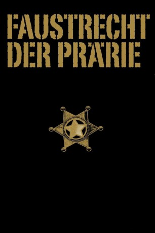

#4322 Faustrecht der Prärie
Alternativ: My Darling Clementine
 
 IMDB-Wertung: 7.8 / 10
IMDB-Wertung: 7.8 / 10  Metascore: 0
Metascore: 0 
Nachdem sein jüngster Bruder James erschossen und seine Viehherde gestohlen wurde, übernimmt Wyatt Earp den Posten des Sheriffs in Tompstone, um mit der Hilfe seiner beiden verbliebenen Brüder Morgan und Virgil die Schuldigen zu finden. Bald lernt er den Spieler Doc Holliday sowie dessen ehemalige Freundin Clementine, die als Lehrerin in die Stadt kommt, kennen und schätzen. Als bei Hollidays aktueller Geliebter, der Sängerin Chihauahua, ein Schmuckstück auftaucht, das früher James gehörte, bestätigt sich Earps Verdacht gegen die Clanton-Sippe. Es kommt zum großen Showdown am O.K. Corral.
Jahr: 1946
Dauer: 97 Minuten
FSK: 12
Land: USA Studio: Twentieth Century-Fox Film CorporationTonspuren:
Untertitel: Deutsch,
Auflösung: 1080p (1440x1080) Größe: 8192 MB
Genre: Drama, Western
Regisseur: John Ford
Drehbuch: James M. Cain
Soundtrack:
Darsteller:
 Henry Fonda als Wyatt Earp
Henry Fonda als Wyatt Earp- Linda Darnell als Chihuahua
 Victor Mature als Doc Holliday
Victor Mature als Doc Holliday- Cathy Downs als Clementine Carter
 Walter Brennan als Old Man Clanton
Walter Brennan als Old Man Clanton- Tim Holt als Virgil Earp
 Ward Bond als Morgan Earp
Ward Bond als Morgan Earp- Alan Mowbray als Granville Thorndyke
 John Ireland als Billy Clanton
John Ireland als Billy Clanton Roy Roberts als Mayor
Roy Roberts als Mayor Jane Darwell als Kate Nelson
Jane Darwell als Kate Nelson- Grant Withers als Ike Clanton
- J. Farrell MacDonald als Mac the Barman
 Russell Simpson als John Simpson
Russell Simpson als John Simpson Robert Adler als Stagecoach Driver , uncredited
Robert Adler als Stagecoach Driver , uncredited Don Barclay als Opera House Owner , uncredited
Don Barclay als Opera House Owner , uncredited Hank Bell als Opera House Patron , uncredited
Hank Bell als Opera House Patron , uncredited Ruth Clifford als Opera House Patron , uncredited
Ruth Clifford als Opera House Patron , uncredited Tex Cooper als Townsman , uncredited
Tex Cooper als Townsman , uncredited- William B. Davidson als Saloon Owner , uncredited
 James Dime als Vaquero , uncredited
James Dime als Vaquero , uncredited Tex Driscoll als Townsman , uncredited
Tex Driscoll als Townsman , uncredited Frank Ellis als Barfly , uncredited
Frank Ellis als Barfly , uncredited Francis Ford als Dad - Old Soldier , uncredited
Francis Ford als Dad - Old Soldier , uncredited Jack Kenny als Barfly , uncredited
Jack Kenny als Barfly , uncredited Mae Marsh als Simpson's Sister , uncredited
Mae Marsh als Simpson's Sister , uncredited Kermit Maynard als Barfly , uncredited
Kermit Maynard als Barfly , uncredited Robert Milasch als Townsman , uncredited
Robert Milasch als Townsman , uncredited- Jack Montgomery als Faro Dealer , uncredited
- Charles Stevens als Indian Charlie , uncredited
- C.E. Anderson als Townsman , uncredited
- Danny Borzage als Accordionist , uncredited
- Frank Conlan als Pianist , uncredited
 Jack Curtis als Bartender , uncredited
Jack Curtis als Bartender , uncredited- Earle Foxe als Gambler , uncredited
- Don Garner als James Earp , uncredited
- Ben Hall als Barber , uncredited
- Aleth Hansen als Guitarist , uncredited
- Duke R. Lee als Townsman , uncredited
- Fred Libby als Phin Clanton , uncredited
- Margaret Martin als Woman , uncredited
- Louis Mercier als François - the Chef , uncredited
- Jack Pennick als Stagecoach Driver , uncredited
- Frances Rey als Woman , uncredited
- Mickey Simpson als Sam Clanton , uncredited
- Arthur Walsh als Hotel Clerk , uncredited
Datei: X:\HD-Western-1900-1959\Faustrecht der Prärie (1946, FSK12, 1440x1080).mkv seit 06.09.2016
Festplatte: HD Eastern+Western
 Es gibt insgesamt 98 Filme in der Gruppe 'HD-Western-1900-1959'
Es gibt insgesamt 98 Filme in der Gruppe 'HD-Western-1900-1959'